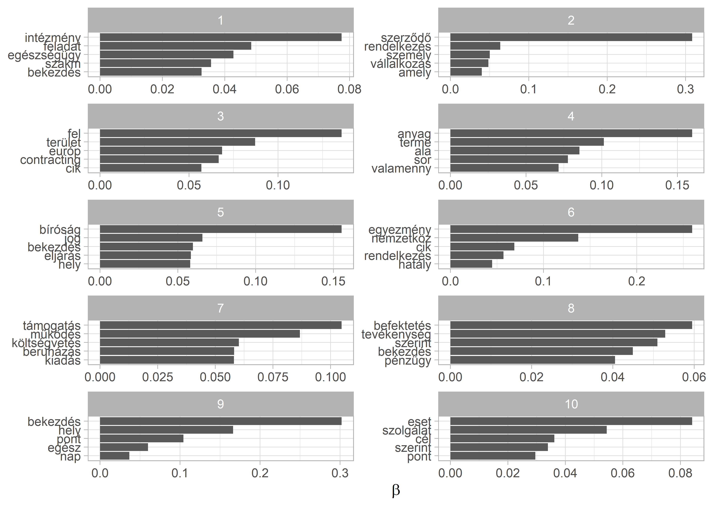
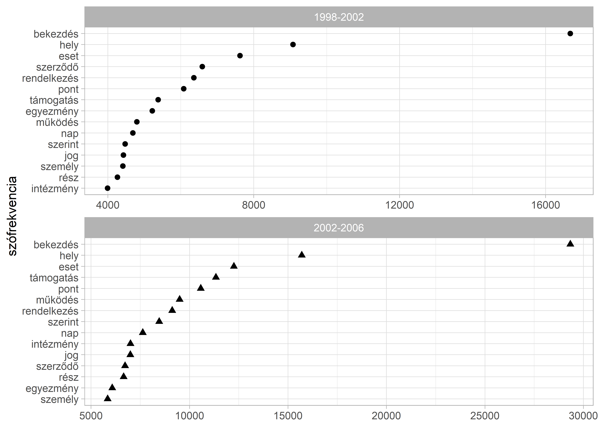

11 Szövegskálázás: felügyelet nélküli és felügyelt megoldások
library(readr)
library(dplyr)
library(stringr)
library(ggplot2)
library(quanteda)
library(quanteda.textmodels)A skálázási algoritmusokat egy kicsi korpuszon fogjuk bemutatni. A minta dokumentumok a 2014-2018 parlamenti ciklusban frakcióvezető politikusok egy-egy véletlenszerűen kiválasztott napirend előtti felszólalása. Összes a ciklusban 11 frakcióvezetője volt a két kormánypárti és öt ellenzéki frakciónak.19 A dokumentumokon a rutin előkészítési lépéseket végezzük csak el (tördelések, számok, központozás kitörlése, kisbetűsítés). Természetesen minél alaposabbak vagyunk a szövegek tisztításával, annál pontosabb végeredményt fogunk kapni.
parl_beszedek <- read_csv("data/ps_sample.csv")
beszedek_tiszta <- parl_beszedek %>%
mutate(
text = str_remove_all(string = text, pattern = "[:cntrl:]"),
text = str_remove_all(string = text, pattern = "[:punct:]"),
text = str_remove_all(string = text, pattern = "[:digit:]"),
text = str_to_lower(text),
text = str_trim(text),
text = str_squish(text)
)A Wordfish és Wordscores algoritmus is ugyanazt a kiinduló corpus és dfm objektumot fogja használni, amit a szokásos módon a quanteda csomag corpus() függvényével hozunk létre. A leíró statisztikai tááblázatban látszik, hogy a beszédek hosszúsága nem egységes, a leghosszabb 10267 szavas, a legrövidebb pedig 1976. Az átlagos dokumentum hossz az 5135.5714286. A korpusz szemléltető célú, az eddig megszokott módon minél több/hosszabb dokumentummal dolgozunk, annál könnyebb dolga van az algoritmusoknak.
beszedek_corpus <- corpus(beszedek_tiszta)
summary(beszedek_corpus)
#> Corpus consisting of 10 documents, showing 10 documents:
#>
#> Text Types Tokens Sentences id
#> text1 442 819 1 20142018_024_0002_0002
#> text2 354 607 1 20142018_055_0002_0002
#> text3 426 736 1 20142018_064_0002_0002
#> text4 314 538 1 20142018_115_0002_0002
#> text5 354 589 1 20142018_158_0002_0002
#> text6 333 538 1 20142018_172_0002_0002
#> text7 344 559 1 20142018_206_0002_0002
#> text8 352 628 1 20142018_212_0002_0002
#> text9 317 492 1 20142018_236_0002_0002
#> text10 343 600 1 20142018_249_0002_0002
#> felszolalo part
#> Vona Gábor (Jobbik) Jobbik
#> Dr. Schiffer András (LMP) LMP
#> Dr. Szél Bernadett (LMP) LMP
#> Tóbiás József (MSZP) MSZP
#> Schmuck Erzsébet (LMP) LMP
#> Dr. Tóth Bertalan (MSZP) MSZP
#> Volner János (Jobbik) Jobbik
#> Kósa Lajos (Fidesz) Fidesz
#> Harrach Péter (KDNP) KDNP
#> Dr. Gulyás Gergely (Fidesz) FideszVégezetül elkészítjük a dfm mátrixot és a magyar stopszavakat kitöröljük.
beszedek_dfm <- beszedek_corpus %>%
tokens() %>%
tokens_remove(stopwords("hungarian")) %>%
dfm()11.1 Wordfish
A wordfish felügyelet nélküli skálázást a quanteda_textmodels csomagban implementált textmodel_wordfish() függvény fogja végezni. A megadott dir = c(1, 2) paraméterrel a két dokumentum relatív \(\theta\) értékét tudjuk rögzíteni, mégpedig úgy hogy \(\theta_{dir1} < \theta_{dir2}\). Alapbeállításként az első és utolsó dokumentumot teszi ide be az algoritmus. A lenti példánál mi a pártpozíciók alapján a Jobbikos Vona Gábor és az LMP-s Schiffer András egy-egy beszédét használtuk. A summary() használható az illesztett modellel, és a dokumentumonkénti \(\theta\) koefficienst tudjuk így megnézni.
beszedek_wf <- textmodel_wordfish(beszedek_dfm, dir = c(2, 1))
summary(beszedek_wf)
#>
#> Call:
#> textmodel_wordfish.dfm(x = beszedek_dfm, dir = c(2, 1))
#>
#> Estimated Document Positions:
#> theta se
#> text1 1.79474 0.04219
#> text2 0.08931 0.04001
#> text3 1.00137 0.03908
#> text4 -0.09988 0.04232
#> text5 0.73596 0.04355
#> text6 0.18572 0.04452
#> text7 -0.72832 0.03590
#> text8 -0.80587 0.03358
#> text9 -0.52028 0.04005
#> text10 -1.65273 0.03794
#>
#> Estimated Feature Scores:
#> vona gábor jobbik tisztelt elnök úr országgyulés tegnapi
#> beta 3.675 2.321 1.9710 0.2391 -0.11149 0.02755 1.2286 4.372
#> psi -4.980 -2.734 -0.7531 0.4566 -0.05693 0.28721 -0.6705 -5.314
#> napon helyen tartottak idoközi önkormányzati választásokat két
#> beta 2.991 3.103 3.675 3.675 3.675 3.675 1.1894
#> psi -3.009 -2.630 -4.980 -4.980 -4.980 -4.980 -0.9439
#> érdekelt recsken ózdon október nyertünk örömmel közlöm ország
#> beta 3.675 4.372 4.774 3.405 3.675 3.675 3.675 1.7470
#> psi -4.980 -5.314 -5.545 -3.230 -4.980 -4.980 -4.980 -0.3643
#> közvéleményével amúgy is tudnak mindkét jobbikos polgármester
#> beta 3.675 3.675 0.9128 1.433 3.675 3.675 3.675
#> psi -4.980 -4.980 1.8345 -1.737 -4.980 -4.980 -4.980Amennyiben szeretnénk a szavak szintjén is megnézni a \(\beta\) (a szavakhoz társított súly, ami a relatív fontosságát mutatja) és \(\psi\) (a szó fix effekt, ami az eltérő szófrekvencia kezeléséért felelős) koefficiensekhez, akkor a beszedek_wf objektumban tárolt értékeket egy data frame-be tudjuk bemásolni. A dokumentumok hosszára és a szófrekfenviát figyelembe véve, a negatív \(\beta\) értékű szavakat gyakrabban használják a negatív \(\theta\) koefficienssel rendelkező politikusok.
szavak_wf <- data.frame(
word = beszedek_wf$features,
beta = beszedek_wf$beta,
psi = beszedek_wf$psi
)
szavak_wf %>%
arrange(beta) %>%
head(n = 15)
#> word beta psi
#> 1 czeglédy -5.900663 -6.222629
#> 2 csaba -5.769959 -6.151399
#> 3 human -5.438681 -5.975155
#> 4 operator -5.438681 -5.975155
#> 5 zrt -5.216835 -5.860931
#> 6 fizette -4.927204 -5.717002
#> 7 gyanú -4.927204 -5.717002
#> 8 szocialista -4.927204 -5.717002
#> 9 elkövetett -4.509192 -5.521276
#> 10 tárgya -4.509192 -5.521276
#> 11 céghálózat -4.509192 -5.521276
#> 12 diákok -4.509192 -5.521276
#> 13 májusi -4.509192 -5.521276
#> 14 júniusi -4.509192 -5.521276
#> 15 büntetoeljárás -4.509192 -5.521276Ez a pozitív értékekre is igaz.
szavak_wf %>%
arrange(desc(beta)) %>%
head(n = 15)
#> word beta psi
#> 1 nemzetközi 5.057078 -5.720709
#> 2 önöknek 4.977502 -4.778607
#> 3 ózdon 4.773523 -5.544626
#> 4 kétharmados 4.773523 -5.544626
#> 5 igenis 4.773523 -5.544626
#> 6 választási 4.773523 -5.544626
#> 7 geopolitikai 4.773523 -5.544626
#> 8 ártatlanság 4.773523 -5.544626
#> 9 vélelme 4.773523 -5.544626
#> 10 tegnapi 4.372320 -5.314088
#> 11 recsken 4.372320 -5.314088
#> 12 lássuk 4.372320 -5.314088
#> 13 tolünk 4.372320 -5.314088
#> 14 janiczak 4.372320 -5.314088
#> 15 szavazattal 4.372320 -5.314088Az eredményeinket mind a szavak és mind a dokumentumok szintjén tudjuk vizualizálni. Elsőként a klasszikus “Eiffel-torony” ábrát reprodukáljuk, ami a szavak gyakorisága és skálára gyakorolt befolyásának az illusztrálására szolgál. Ehhez a már elkészült szavak_wf data framet és a ggplot2 csomagot fogjuk használni. Mivel a korpuszunk nagyon kicsi ezért csak 2410 kifejezést fogunk ábrázolni. Ennek ellenére a lényeg kirajzolódik a lenti ábrán is.20
Kihasználhatjuk, hogy a ggplot ábra definiálása közben a felhasznált bemeneti data frame-t különböző szempontok alapján lehet szűrni. így ábrázolni tudjuk a gyakran használt ám semleges szavakat (magas \(\psi\), alacsony \(\beta\)), illetve a ritkább de meghatározóbb szavakat (magas \(\beta\), alacsony \(\psi\)).
ggplot(szavak_wf, aes(x = beta, y = psi)) +
geom_point(color = "grey") +
geom_text(
data = filter(szavak_wf, beta > 5 | beta < -4.5 | psi > 0),
aes(beta, psi, label = word),
alpha = 0.7
) +
labs(
x = expression(beta),
y = expression(psi)
)
A dokumentumok szintjén is érdemes megvizsgálni az eredményeket. Ehhez a dokumentum szintű paramétereket fogjuk egy data framebe gyűjteni: a \(\theta\) ideológiai pozíciót, illetve a beszélő nevét. A vizualizáció kedvéért a párttagságot is hozzáadjuk. A data frame összerakása után az alsó és felső határát is kiszámoljuk a konfidencia intervallumnak és azt is ábrázoljuk.
dokumentumok_wf <- data.frame(
speaker = beszedek_wf$x@docvars$felszolalo,
part = beszedek_wf$x@docvars$part,
theta = beszedek_wf$theta,
theta_se = beszedek_wf$se.theta
) %>%
mutate(
lower = theta - 1.96 * theta_se,
upper = theta + 1.96 * theta_se
)
ggplot(dokumentumok_wf, aes(theta, reorder(speaker, theta))) +
geom_point() +
geom_errorbarh(aes(xmin = lower, xmax = upper), height = 0) +
labs(
y = NULL,
x = expression(theta)
)
A párt metaadattal összehasonlíthatjuk az egy párthoz tartozó frakcióvezetők értékeit a facet_wrap() használatával. Figzeljünk arra hogy az y tengelyen szabadon
ggplot(dokumentumok_wf, aes(theta, reorder(speaker, theta))) +
geom_point() +
geom_errorbarh(aes(xmin = lower, xmax = upper), height = 0) +
labs(
y = NULL,
x = expression(theta)
) +
facet_wrap(~part, ncol = 1, scales = "free_y")
11.2 Wordscores
A wordscores egy felügyelt gépi tanulásos skálázási algoritmus, ahol a a referencia dokumentumok szövege a tanító halmaz. A modell illesztést a wordfish-ez hasonlóan a quanteda.textmodels csomagban található textmodel_wordscores() függvény végzi. A kiinduló dfm ugyanaz mint amit a fejezet elején elkészítettünk, a beszedek_dfm.
A referencia pontokat dokumentumváltozóként hozzáadjuk a dfm-hez a refrencia_pont oszlopot, ami NA értéket kap alapértelmezetten. A kiválasztott referencia dokumentumoknál pedig egyenként hozzáadjuk az értékeket. Erre több megoldás is van, az egyszerűbb út, hogy az egyik és másik végletet a -1; 1 intervallummal jelöljük. Ennek a lehetséges alternatívája, hogy egy külső, már validált forrást használunk. Pártok esetén ilyen lehet a Chapel Hill szakértői kérdőívének a pontszámai, a Manifesto projekt által kódolt jobb-bal (rile) dimenzó. A lenti példánál mi maradunk az egyszerűbb bináris kódolásnál. A wordfish eredményt alapul véve a két referencia pont a Gulyás Gergely és Szél Bernadett beszédei lesznek.21 Ezek a 3. és 10. dokumentumok.
docvars(beszedek_dfm, "referencia_pont") <- NA
docvars(beszedek_dfm, "referencia_pont")[3] <- -1
docvars(beszedek_dfm, "referencia_pont")[10] <- 1
docvars(beszedek_dfm)
#> id felszolalo part referencia_pont
#> 1 20142018_024_0002_0002 Vona Gábor (Jobbik) Jobbik NA
#> 2 20142018_055_0002_0002 Dr. Schiffer András (LMP) LMP NA
#> 3 20142018_064_0002_0002 Dr. Szél Bernadett (LMP) LMP -1
#> 4 20142018_115_0002_0002 Tóbiás József (MSZP) MSZP NA
#> 5 20142018_158_0002_0002 Schmuck Erzsébet (LMP) LMP NA
#> 6 20142018_172_0002_0002 Dr. Tóth Bertalan (MSZP) MSZP NA
#> 7 20142018_206_0002_0002 Volner János (Jobbik) Jobbik NA
#> 8 20142018_212_0002_0002 Kósa Lajos (Fidesz) Fidesz NA
#> 9 20142018_236_0002_0002 Harrach Péter (KDNP) KDNP NA
#> 10 20142018_249_0002_0002 Dr. Gulyás Gergely (Fidesz) Fidesz 1A lenti wordscore model specifikáció követi a Laver, Benoit, and Garry (2003) - ben leírtakat.
beszedek_ws <- textmodel_wordscores(
x = beszedek_dfm,
y = docvars(beszedek_dfm, "referencia_pont"),
scale = "linear",
smooth = 0
)
summary(beszedek_ws, 10)
#>
#> Call:
#> textmodel_wordscores.dfm(x = beszedek_dfm, y = docvars(beszedek_dfm,
#> "referencia_pont"), scale = "linear", smooth = 0)
#>
#> Reference Document Statistics:
#> score total min max mean median
#> text1 NA 486 0 18 0.2017 0
#> text2 NA 395 0 12 0.1639 0
#> text3 -1 439 0 12 0.1822 0
#> text4 NA 330 0 7 0.1369 0
#> text5 NA 360 0 8 0.1494 0
#> text6 NA 328 0 5 0.1361 0
#> text7 NA 349 0 5 0.1448 0
#> text8 NA 387 0 10 0.1606 0
#> text9 NA 307 0 13 0.1274 0
#> text10 1 383 0 8 0.1589 0
#>
#> Wordscores:
#> (showing first 10 elements)
#> tisztelt elnök úr országgyulés ország is
#> -0.07547 0.39255 0.06813 0.06813 -1.00000 -0.19859
#> sot nemhogy tette fidesz
#> -1.00000 -1.00000 -1.00000 1.00000Az illesztett wordscores modellünkkel ezek után már meg tudjuk becsülni a korpuszban lévő többi dokumentum pozícióját. Ehhez az R beépített predict() megoldását használjuk. A kiegészítő opciókkal a konfidencia intervallum alsó és felső határát is meg tudjuk becsülni, ami jól jön hogyha szeretnénk ábrázolni az eredményt.
beszedek_ws_pred <- predict(
beszedek_ws,
newdata = beszedek_dfm,
interval = "confidence"
)
beszedek_ws_pred <- as.data.frame(beszedek_ws_pred$fit)
beszedek_ws_pred
#> fit lwr upr
#> text1 -0.489860579 -0.62138707 -0.35833409
#> text2 -0.234609623 -0.39658117 -0.07263807
#> text3 -0.909048451 -0.93507086 -0.88302605
#> text4 -0.296528588 -0.47539855 -0.11765863
#> text5 -0.259074418 -0.44948427 -0.06866457
#> text6 0.006320468 -0.23056645 0.24320738
#> text7 0.165042014 -0.06144022 0.39152425
#> text8 -0.077739857 -0.27645536 0.12097565
#> text9 -0.123985348 -0.31176579 0.06379509
#> text10 0.909048451 0.87934394 0.93875296A kapott modellünket a wordfishez hasonlóan tudjuk ábrázolni, miután a beszedek_ws_pred objektumból egy data framet csinálunk és a ggplot2-vel elkészítjük a vizualizációt. A dokumentumok_ws két részből áll össze. Először a wordscores modell objektumunkból a frakcióvezetők neveit és pártjaikat emeljük ki (kicsit körülményes a dolog mert egy komplexebb objektumban tárolja őket a quanteda, de az str() függvény tud segíteni ilyen esetekben). A dokumentumok becsült pontszámait pedig a beszedek_ws_pred objektumból készített data frame hozzácsatolásával tesszük meg. Ehhez a dplyr csomag bind_cols függvényét használjuk. Fontos, hogy itt teljesen biztosnak kell lennünk abban, hogy a sorok a két data frame esetében ugyanarra a dokumentumra vonatkoznak.
dokumentumok_ws <- data.frame(
speaker = beszedek_ws$x@docvars$felszolalo,
part = beszedek_ws$x@docvars$part
)
dokumentumok_ws <- bind_cols(dokumentumok_ws, beszedek_ws_pred)
dokumentumok_ws
#> speaker part fit lwr upr
#> text1 Vona Gábor (Jobbik) Jobbik -0.489860579 -0.62138707 -0.35833409
#> text2 Dr. Schiffer András (LMP) LMP -0.234609623 -0.39658117 -0.07263807
#> text3 Dr. Szél Bernadett (LMP) LMP -0.909048451 -0.93507086 -0.88302605
#> text4 Tóbiás József (MSZP) MSZP -0.296528588 -0.47539855 -0.11765863
#> text5 Schmuck Erzsébet (LMP) LMP -0.259074418 -0.44948427 -0.06866457
#> text6 Dr. Tóth Bertalan (MSZP) MSZP 0.006320468 -0.23056645 0.24320738
#> text7 Volner János (Jobbik) Jobbik 0.165042014 -0.06144022 0.39152425
#> text8 Kósa Lajos (Fidesz) Fidesz -0.077739857 -0.27645536 0.12097565
#> text9 Harrach Péter (KDNP) KDNP -0.123985348 -0.31176579 0.06379509
#> text10 Dr. Gulyás Gergely (Fidesz) Fidesz 0.909048451 0.87934394 0.93875296A lenti példánál a párton belüli bontást illusztráljuk, a facet_wrap() segítségével.
ggplot(dokumentumok_ws, aes(fit, reorder(speaker, fit))) +
geom_point() +
geom_errorbarh(aes(xmin = lwr, xmax = upr), height = 0) +
labs(
y = NULL,
x = "Wordscore"
) +
facet_wrap(~part, ncol = 1, scales = "free_y")
A mintába nem került be Rogán Antal, akinek csak egy darab napirend előtti felszólalása volt.↩︎
A
quanteda.textplotscsomag több megoldást is kínál az ábrák elkészítésére. Mivel ezek a megoldások kifejezetten a quanteda elemzések ábrázolására készültek, ezért rövid egysoros függvényekkel tudunk gyorsan ábrákat készíteni. A hátrányuk, hogy kevésbé tudjuk “személyre szabni” az ábráinkat, mint aggplot2példák esetében. Aquanteda.textplotsmegoldásokat ezen a linken demonstrálják a csomag készítői: https://quanteda.io/articles/pkgdown/examples/plotting.html↩︎Azért nem a Vona Gábor beszédét választottuk, mert az gyaníthatóan egy kiugró érték ami nem reprezentálja a sokaságot megfelően.↩︎